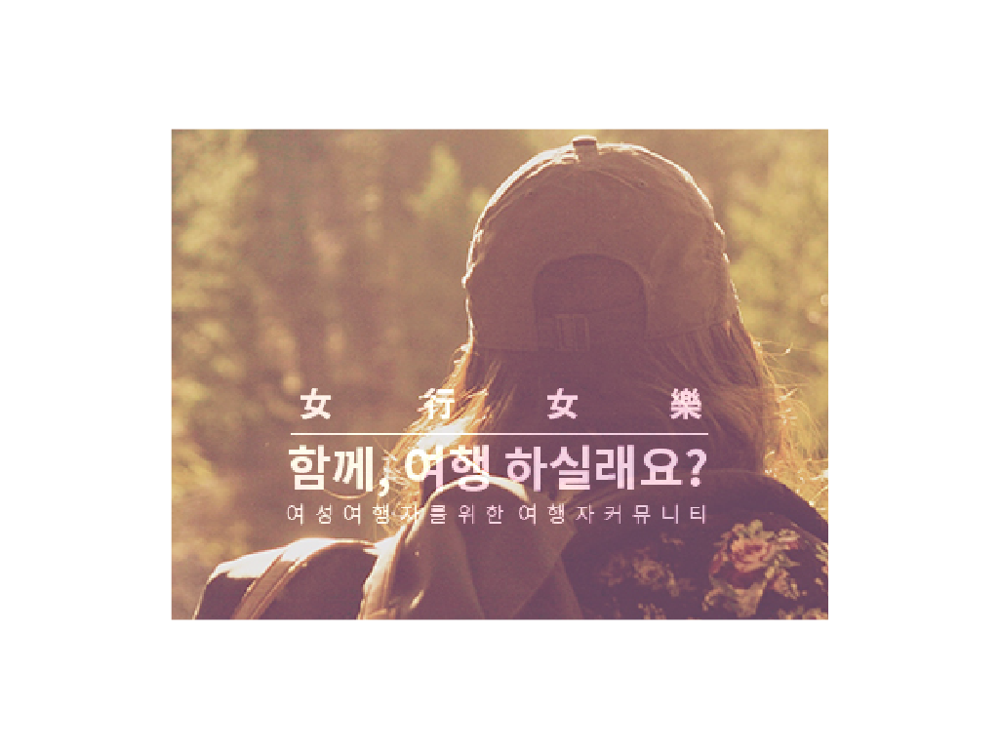

여행여락 브랜딩 작업 작업연월 : 2016.6 ~ 7월 작업규격 : 웹/인쇄용 이미지 다수 여행여락 페이스북 페이지 링크 기존의 여성의 색으로 대변되던 '분홍'을 너머 중성적인 느낌의 '보라'색을 주조색으로 선정. 보라색은 현명함과 정열을 상징하므로 여성이 스스로 여행을 하는데 필요한 요소를 두루 갖춘 색. 거기에 소비만을 위한 여행이 아닌 여행지역에 기여를 위한 또 다른 대안적 소비지향성을 보여주는 자연주의, 비건 채식의 이미지를 매치함.